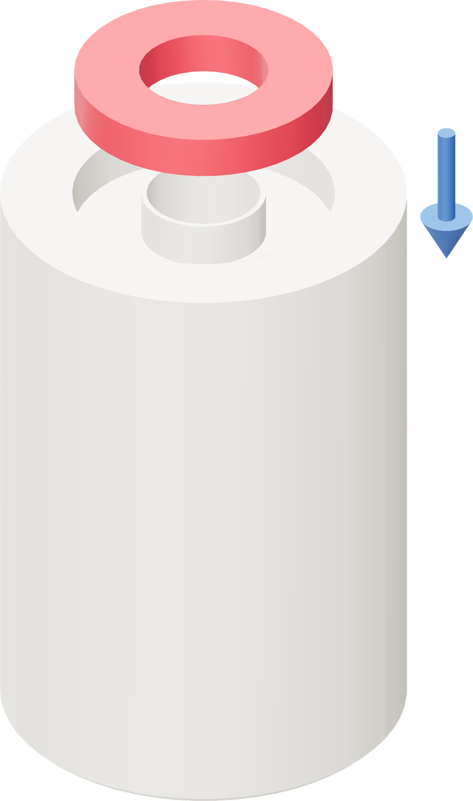

Put the magnet in now
Prepare the core before starting PETG. At the printer, the core and magnet will go in together.

- Stand the core on its flat bottom, pocket upward.
- Separate one RC62 from its stack. Hold it by the edges and lower it squarely into the pocket.
- Seat the ring flat against the pocket floor with light fingertip pressure. Either flat face can point upward for the reed-switch application.
- Keep the prepared core upright beside the printer. Set the short insert beside it, chamfers downward.
Captured by the insert
Use the ring as supplied. The printed pocket and upper insert hold it inside the finished float; assembly requires no adhesive.